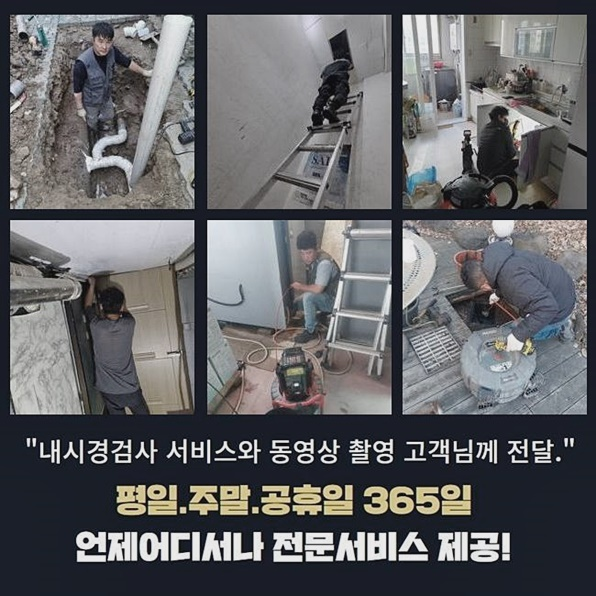
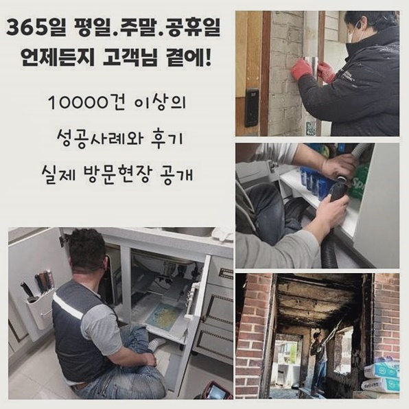
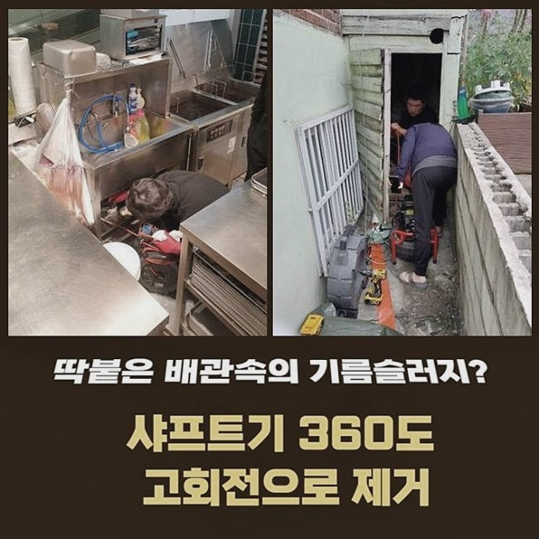
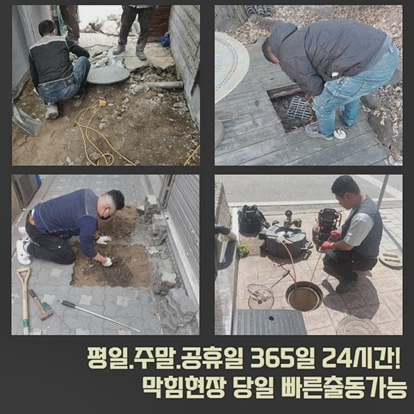
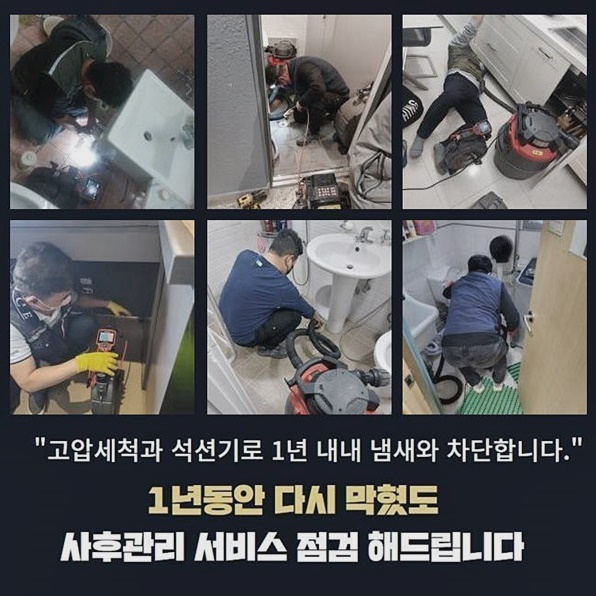
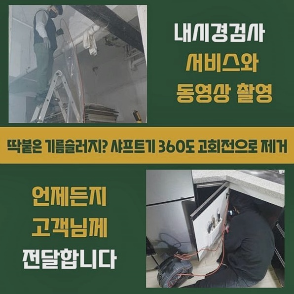

🏠 영등포 양화동하수도막힘 양평동 맨홀막힘 배관전문
용인시 처인구 배관막힘 전문 시공 후기

📋 작업 개요
- 위치: 용인시 처인구, 수원시 영통구, 화성시 동탄
- 서비스 유형: 배관막힘, 배관수리, 고압세척, 내시경점검
- 작업 일시:
- 업체명: 하수구수사대 (010-5615-2118)
🔍 문제 상황
영등포 양화동하수도막힘 양평동 맨홀막힘 배관전문
배수관 막힘의 현상과 강도는 건축물의 구조나 사용용도마다 차이가 있어요
확실히 주택보다는 요식업소가 입점한 상가에서 배수장애가 심각한 경우가 많죠
그러나 상가의 사용 기간이나 어떤 방식의 관리를 했는지 정도에 따라 상황의 차이가 있으므로 전부 같다고 이야기하는 것은 어렵죠
그러므로 다수의 상가에서 함께 배수장애가 일어나거나 반복적으로 현상들이 생길 때는 반드시 전문배관기사를 통하여 근본적인 원인을 발견하고 막힘현상을 해결하는 것이 중요합니다
오늘 살펴볼 우리의 전문수리팀이 다녀온 곳도 상가 빌딩에서 일어난 문제였죠
친구를 통하여 저희 기술자를 소개 받았다는데 자주 배수장애 현상이 생기니 전문적 방식으로 해결가능한 수리업체를 수소문하고 계셨다고 말씀하셨어요
저희 업체가 도착한 다음 문제 현장을 둘러본 결과 상가 내부에 입주한 여러 가구에서 한번에 물길이 막히는 상황이 나타나고 있었죠
상가건물이기 때문에 장사중인 점포내에서 배수가 안되거나 흘러 넘치는 역류가 진행되고 있는 상태였습니다
하지만 이러한 배수관 막힘은 원인없이 생기는게 아니라서 걱정이 되었습니다

🔎 원인 분석
💡 전문가 진단: 정밀 진단 장비를 사용하여 슬러지의 고착 여부를 판명하고 타격/세척 작업을 실시했습니다.
한번 문제가 발생하면 피해도 심하고 화장실 내의 막힘도 심각하므로 뚫으려면 확실한 해결안을 생각해내야하는 상황이었습니다
고객님들은 여러가지 정보를 사전에 알아보셨는지 하수배관막힘을 책임지고 있는 저희전문가에게 배수관 고압 물세척을 하고 싶다며 문의하셨습니다
고압세척기구는 순간 아주 강한 압력을 활용해 대량의 물을 배수관으로 주입하여 하수관로 내부에 있는 오물덩어리를 배출할 수 있는 장치예요
그렇기때문에 상태에 적절하게 활용하면 신속하게 막힘문제를 해결하는 것은 진실입니다
그런데 어디에나 고압세척기기를 적용할 수 있는 것은 아님을 기억해야합니다
고압세정장치는 압력을 끌어올릴 수 있는 엔진장비와 연결이 필요해서 작업현장으로 적절치 않은 장소라면 활용하기가 어렵습니다
또한 아파트와 연립등의 거주지역에서는 하수관 고압수 클리닝보다는 오물들을 빨아들이는 석션시공이나 샤프트기구를 적용한 파쇄와 청소 활동이 효율이 좋습니다
그렇지만 문제가 생긴 상가 빌딩에서 긴 기간동안 막힌상태가 몇번이고 발생되었는데도 알맞은 수리를 해오지 않아서 막힘 장애가 심각해보였습니다
배수파이프 내에 기름뭉치들이 계속해서 축적되면 이것을 제거하는 것도 어렵지만 배수구에 큰 악영향이 생길 수 있다는 게 더 큰 걱정이었습니다
음식점 또는 기름을 사용해 요리하는 매장에서 배출하는 기름뭉치와 기름기들은 오래동안 배수관 안쪽에서 뭉치면 그 지름이나 하중이 더해지는 경우가 많습니다
그래서 슬러지덩어리가 대량으로 누적된다면 배수관로가 무게가 더해져서 연결구간이 풀리거나 주저앉는 상황이 발생될 가능성이 있습니다

🔧 작업 과정
먼저 배수구의 컨디션을 면밀히 살펴보고 고압수 클리닝이 이뤄질 수 있는지 여부를 확인하고 하수파이프 청소를 시작하게 되었어요
접합부위를 상세히 확인해보니 배수관이 서서히 처지고 있는 현상도 있었지만 이건 오염물질을 제거하게 되면 원상복귀될 것으로 생각하여 헐거워진 부근만 스틸스트랩으로 고정했어요
이와 같이 사전에 예비 단계를 실시하지 않고 강한 압력을 쓰게 된다면 배수관에 피해가 발생할 가능성이 있으므로 더 커다란 문제들이 일어날 수 있습니다
고정시키는 작업을 완료하고 이 시점부터 철저한 세척작업을 착수하기 위해 하수도 내시경카메라를 활용할 준비를 하였습니다
공용파이프가 매우 길게 이어졌으므로 배수구전용 카메라로 배수파이프 안을 분석하는 시간이 많이 걸렸어요
그렇다해도 배수파이프 정비에서 핵심적인 과정은 확실한 진단을 통해 이유를 밝혀내는 것이기 때문에 내시경 기기 활용을 대충해서는 안돼요
고압수 세척을 청결하게 하기 위해 하수도 내시경카메라를 배관 깊은 내부까지 침투시켜 공용파이프를 세밀하게 살펴보았습니다
배수구 내부 관리작업이 적절히 이루어지지 않아서 깊숙한 지점까지 기름뭉치들이 가득한 것을 발견할 수 있었어요
하수배관을 수리하는 저희 배관수리팀은 이정도의 수준이면 고압세척기를 활용해서 시공을 하는 것이 맞다는 결정을 하였습니다
이러한 상가빌딩 지하실에 있는 공용파이프는 길이가 긴 편이 많아서 가운데 부근에서 먼저 세척작업을 하고 보강처리를 하는 것이 효율이 높아요
이와 같이 정밀하게 배수파이프 내의 문제나 연결된 구조들을 알아낸 후 공사를 실시해야 핵심적인 막힘현상을 처리 할 수 있습니다
이처럼 꼼꼼한 수리가 아닌 임시 조치로 고장들을 처리하고 나면 상황은 개선되지 않고 다시금 배관막힘이 일어나는 문제가 반복될 뿐이죠
이번엔 고압수 세척장비를 이용해서 본격적으로 하수파이프 세정을 진행할 시점입니다
막힘의 근원과 문제가 된 영역을 발견했으므로 고압세정이 완벽하게 종료했을 땐 걱정없이 수도를 이용할 수 있으실 거예요
고압세척의 경우 일순간에 대량의 물이 물이 배수관 속으로 흘러 들어가기에 시공자의 역량이 필수인 시공이에요
고압 물세척을 실행하는 동안 내시경장비를 활용해서 청결하게 불순물이 제거되는지도 점검했어요
고압 물세척을 마친 후 내시경기기로 배수관 속 상황을 점검한 후 통수 테스트까지 몇번이고 진행해줬습니다 막힘현상 없이 흘려보낸 물이 정상적으로 배출하는 모습들을 통수검사로 알게되었습니다


✅ 작업 완료
하수파이프 막힘을 담당하고 있는 저희 기사님은 고객께 세부적인 내용들을 안내드리고 중앙부근 수리를 진행한 지점도 마무리 한 다음 절차를 끝맺을 수 있었어요
이렇게 상가 빌딩에서 배수 장애가 생기면 어려운 상태가 되므로 신속한 해결이 매우 중요합니다
지금부터는 많은 걱정이나 고민을 접어두시고 저희전문가에게 문의해주세요
미미한 증상들을 무시하신다면 더 심각한 현상으로 악화될 수 있으니 확인하는대로 빠르게 조치하겠습니다
모든 업체 중 가장 신속하고 효과적으로 막힘 현상을 처리하겠습니다



⚠️ 하수구 배관 막힘 예방 및 관리 가이드
- ✅ 머리카락, 비닐, 물티슈 등 물에 분해되지 않는 이물질은 절대 흘려보내지 마세요.
- ✅ 기름기 많은 식기는 설거지 전 키친타올로 먼저 기름때를 닦아내세요.
- ✅ 주기적으로 배수구에 뜨거운 물을 가득 부어주어 유지방 고착을 방지하세요.
- ✅ 작업 후 1년 이내 재발 시 무상 A/S 보증 서비스를 제공합니다.
💡 핵심 정리
- 확실한 장비 작업(내시경 점검 및 샤프트 스케일링)으로 원인을 뿌리 뽑습니다.
- 작업 후 1년 이내에 동일한 부위 재발 시 100% 무상 A/S 서비스를 보장합니다.
- 서울 · 경기 · 인천 전 지역에 24시간 언제든 긴급 출동할 수 있도록 항시 대기 중입니다.
❓ 자주 묻는 질문 (FAQ)
🚨 용인시 처인구 배관막힘 문제로 고민이신가요?
정확한 원인 진단과 확실한 시공으로 재발 없는 해결을 약속드립니다.
24시간 긴급 출동 | 서울 · 경기 · 인천 전지역 | 1년 내 재발 시 무상 A/S